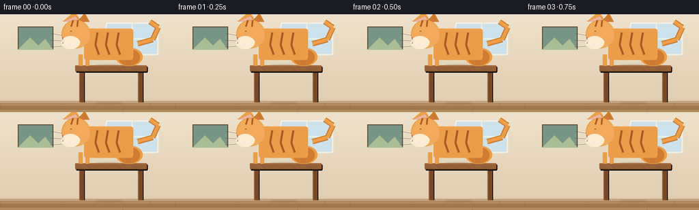
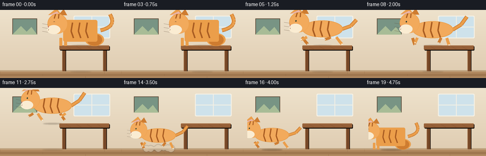
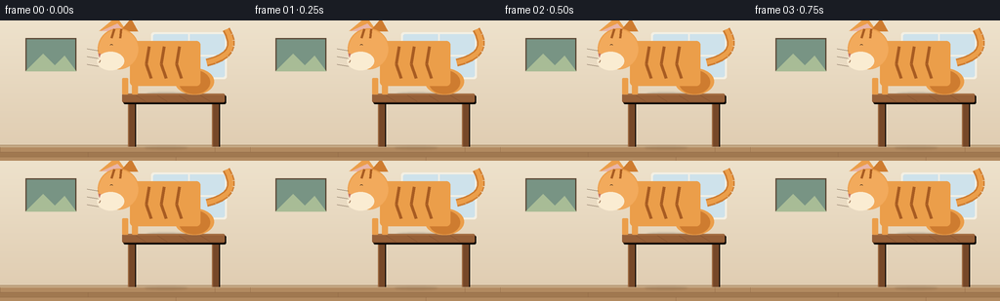
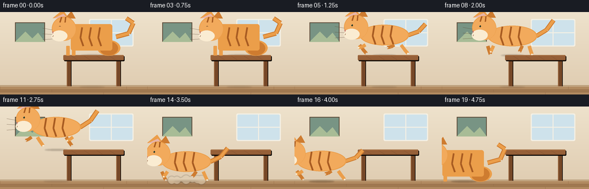

CODING AGENTS AS PIXEL WORLD MODELS
traex/Seed-2.1-Pro-0915 · dynamic_spatial_relationship_0011
点击播放 · 原生 RGB 像素
逐轮保存的候选
回放视频、检查图与代码变化。
每份候选均可单独播放。实际图片检查记录在下方工具轨迹中。
候选 01播放与检查图
点击播放 · 原生 RGB 像素


展开代码变化
--- 上一保存版本
+++ 本次保存版本
@@ -0,0 +1,297 @@
+"""Text-to-video: a cat sits on a table, then runs to the left of the table.
+
+Renders 20 RGB frames at 256x144 (4 fps) with pure PIL/numpy geometry.
+The scene is drawn at 3x resolution and downsampled for smooth edges.
+"""
+from pathlib import Path
+import math
+
+import numpy as np
+from PIL import Image, ImageDraw, ImageFilter
+
+import artifact_io
+
+CASE_DIR = Path(__file__).parent
+W, H, N, FPS = 256, 144, 20, 4.0
+S = 3 # supersampling factor
+SW, SH = W * S, H * S
+FLOOR_Y = 130 * S # top surface of the floor
+TABLE_L, TABLE_R = 110 * S, 215 * S
+TABLE_TOP_Y = 75 * S # top surface of the tabletop
+PLANK_H = 5 * S
+
+# Palette
+WALL_TOP = (238, 226, 204)
+WALL_BOT = (224, 205, 178)
+FLOOR_C1 = (178, 138, 96)
+FLOOR_C2 = (160, 120, 80)
+WOOD = (150, 96, 56)
+WOOD_DARK = (118, 72, 40)
+WOOD_LIGHT = (178, 122, 74)
+CAT = (235, 158, 74)
+CAT_DARK = (206, 124, 48)
+CAT_LIGHT = (242, 170, 92)
+CAT_STRIPE = (168, 92, 34)
+CREAM = (250, 236, 210)
+
+
+def lerp(a, b, t):
+ return a + (b - a) * t
+
+
+def ease(t):
+ return t * t * (3 - 2 * t)
+
+
+def make_background():
+ """Static room: wall gradient, window, floorboards, baseboard."""
+ img = Image.new("RGB", (SW, SH))
+ px = img.load()
+ for y in range(FLOOR_Y):
+ t = y / FLOOR_Y
+ c = tuple(int(lerp(WALL_TOP[i], WALL_BOT[i], t)) for i in range(3))
+ for x in range(SW):
+ px[x, y] = c
+ for y in range(FLOOR_Y, SH):
+ row = (y - FLOOR_Y) // PLANK_H
+ c = FLOOR_C1 if row % 2 == 0 else FLOOR_C2
+ for x in range(SW):
+ px[x, y] = c
+
+ d = ImageDraw.Draw(img)
+ # Soft daylight window on the right wall
+ wx0, wy0, wx1, wy1 = 470 * S // 3, 14 * S, 690 * S // 3, 58 * S
+ d.rounded_rectangle([wx0 - 6, wy0 - 6, wx1 + 6, wy1 + 6], 8,
+ fill=(244, 240, 228))
+ d.rounded_rectangle([wx0, wy0, wx1, wy1], 6, fill=(206, 226, 235))
+ d.line([(wx0 + wx1) // 2, wy0, (wx0 + wx1) // 2, wy1], fill=(244, 240, 228), width=5)
+ d.line([wx0, (wy0 + wy1) // 2, wx1, (wy0 + wy1) // 2], fill=(244, 240, 228), width=5)
+ # Framed picture on the left wall
+ d.rectangle([26 * S, 18 * S, 78 * S, 52 * S], fill=(120, 148, 132),
+ outline=(92, 74, 56), width=4)
+ d.polygon([(26 * S, 52 * S), (44 * S, 34 * S), (56 * S, 46 * S),
+ (66 * S, 36 * S), (78 * S, 52 * S)], fill=(168, 188, 150))
+ # Baseboard
+ d.rectangle([0, FLOOR_Y - 7, SW, FLOOR_Y], fill=(196, 168, 132))
+ d.line([0, FLOOR_Y - 7, SW, FLOOR_Y - 7], fill=(170, 140, 106), width=2)
+ # Floor plank seams
+ for y in range(FLOOR_Y + PLANK_H, SH, PLANK_H):
+ d.line([0, y, SW, y], fill=(140, 102, 68), width=1)
+ for row, y in enumerate(range(FLOOR_Y, SH, PLANK_H)):
+ offset = (row % 3) * 90 * S
+ for x in range(offset, SW, 220 * S):
+ d.line([x, y, x, min(y + PLANK_H, SH - 1)], fill=(140, 102, 68), width=1)
+ return img
+
+
+def composite(img, layer):
+ return Image.alpha_composite(img.convert("RGBA"), layer).convert("RGB")
+
+
+def draw_table(img):
+ d = ImageDraw.Draw(img)
+ x0, x1, y0 = TABLE_L, TABLE_R, TABLE_TOP_Y
+ top_h, leg_w = 9 * S, 7 * S
+ leg_top, leg_bot = y0 + top_h, FLOOR_Y - 2
+ # Leg shadows
+ for lx in (x0 + 6 * S, x1 - 13 * S):
+ d.rectangle([lx + 3, leg_top, lx + leg_w + 3, leg_bot], fill=(0, 0, 0))
+ # Legs
+ for lx in (x0 + 6 * S, x1 - 13 * S):
+ d.rectangle([lx, leg_top, lx + leg_w, leg_bot], fill=WOOD_DARK)
+ d.line([lx + 1, leg_top, lx + 1, leg_bot], fill=WOOD_LIGHT, width=2)
+ # Tabletop shadow then slab
+ d.rounded_rectangle([x0 + 4, y0 + 5, x1 + 4, y0 + top_h + 5], 5, fill=(0, 0, 0))
+ d.rounded_rectangle([x0, y0, x1, y0 + top_h], 5, fill=WOOD)
+ d.line([x0 + 4, y0 + 2, x1 - 4, y0 + 2], fill=WOOD_LIGHT, width=2)
+ d.line([x0 + 3, y0 + top_h - 2, x1 - 3, y0 + top_h - 2], fill=WOOD_DARK, width=2)
+ # Wood grain on the front face
+ for gx in range(x0 + 14 * S, x1 - 10 * S, 22 * S):
+ d.line([gx, y0 + 5, gx + 10 * S, y0 + top_h - 3], fill=WOOD_DARK, width=1)
+
+
+def draw_cat(base, cx, gy, pose, phase=0.0):
+ """Draw a side-view tabby cat facing left.
+
+ cx: body center x; gy: ground (feet) y. pose: sit | run | land | stand.
+ phase: running-cycle phase in radians.
+ """
+ layer = Image.new("RGBA", base.size, (0, 0, 0, 0))
+ d = ImageDraw.Draw(layer)
+
+ def line(points, fill, w=5):
+ d.line([(int(x), int(y)) for x, y in points], fill=fill, width=int(w))
+
+ bob = -3 * abs(math.sin(phase)) * S if pose in ("run", "land") else 0
+ cx, gy = int(cx), int(gy + bob)
+
+ body_w, body_h = 86 * S, 36 * S
+ bx0, bx1 = cx - body_w // 2, cx + body_w // 2
+ by0, by1 = gy - body_h - 14 * S, gy - 14 * S
+ head_r = 21 * S
+ hx, hy = bx0 - 6 * S, by0 + 4 * S
+
+ # ---- Tail (behind body), swings with gait ----
+ tail_swing = math.sin(phase - 0.6) * 0.35 if pose == "run" else 0.12
+ tx, ty = bx1 - 4, (by0 + by1) // 2
+ if pose == "sit":
+ curl = [(tx, ty), (tx + 22 * S, ty - 6 * S),
+ (tx + 30 * S, ty - 24 * S), (tx + 18 * S, ty - 32 * S)]
+ else:
+ curl = [(tx, ty),
+ (tx + 18 * S, ty - 10 * S + tail_swing * 12 * S),
+ (tx + 30 * S, ty - 26 * S + tail_swing * 22 * S)]
+ line(curl, CAT_DARK, w=8 * S)
+ line(curl, CAT, w=5 * S)
+
+ # ---- Legs ----
+ leg_w = 6 * S
+ if pose == "sit":
+ for lx in (hx + 4 * S, hx + 14 * S):
+ d.rounded_rectangle([lx, by1 - 6, lx + leg_w, gy + 2], 3, fill=CAT)
+ # folded haunches
+ d.ellipse([bx1 - 34 * S, by1 - 12 * S, bx1 + 6 * S, gy + 3], fill=CAT)
+ d.ellipse([bx1 - 30 * S, by1 - 10 * S, bx1 + 2 * S, gy + 1], fill=CAT_DARK)
+ else:
+ swing = math.sin(phase)
+ swing2 = math.sin(phase + math.pi)
+ legs = [
+ (hx + 6 * S, swing, CAT_DARK), # far front
+ (hx + 16 * S, swing2, CAT), # near front
+ (bx1 - 26 * S, swing2, CAT_DARK), # far back
+ (bx1 - 14 * S, swing, CAT), # near back
+ ]
+ for lx, sw, col in legs:
+ foot_dx = sw * 12 * S
+ foot_up = max(0.0, -sw) * 10 * S
+ paw_col = CREAM if col == CAT else (226, 205, 178)
+ line([(lx, by1 - 2), (lx + foot_dx * 0.5, gy - 7 * S - foot_up * 0.4),
+ (lx + foot_dx, gy - foot_up)], col, w=leg_w)
+ d.ellipse([lx + foot_dx - 4, gy - foot_up - 3,
+ lx + foot_dx + 6, gy - foot_up + 4], fill=paw_col)
+
+ # ---- Body ----
+ if pose == "sit":
+ d.rounded_rectangle([bx0 + 6 * S, by0 - 4 * S, bx1 - 8 * S, by1 + 6 * S],
+ 12, fill=CAT)
+ else:
+ d.ellipse([bx0, by0, bx1, by1], fill=CAT)
+ d.ellipse([bx0 + 4, by0 + 3, bx1 - 6, by1 - 4], fill=CAT_LIGHT)
+ # Tabby stripes
+ for sx in (0.30, 0.48, 0.66):
+ xx = int(bx0 + body_w * sx)
+ line([(xx, by0 + 5), (xx - 3 * S, by0 + body_h * 0.55),
+ (xx + 2 * S, by1 - 5)], CAT_STRIPE, w=3.2 * S)
+
+ # ---- Ears ----
+ d.polygon([(hx - head_r + 4, hy - head_r + 8),
+ (hx - 2 * S, hy - head_r - 12 * S),
+ (hx + 8 * S, hy - head_r + 6)], fill=CAT)
+ d.polygon([(hx + 2 * S, hy - head_r + 8),
+ (hx + 13 * S, hy - head_r - 10 * S),
+ (hx + head_r - 2, hy - head_r + 10)], fill=CAT_DARK)
+ d.polygon([(hx - head_r + 8, hy - head_r + 9),
+ (hx - 1 * S, hy - head_r - 5 * S),
+ (hx + 6 * S, hy - head_r + 8)], fill=(232, 180, 168))
+ # ---- Head ----
+ d.ellipse([hx - head_r, hy - head_r, hx + head_r, hy + head_r], fill=CAT)
+ d.ellipse([hx - head_r + 3, hy - head_r + 4, hx + head_r - 2, hy + head_r - 1],
+ fill=CAT_LIGHT)
+ d.ellipse([hx - head_r - 2, hy + 3 * S, hx + 6 * S, hy + head_r + 3], fill=CREAM)
+ # Eye (facing left): content closed curve when sitting, open otherwise
+ ex, ey = hx - 7 * S, hy - 3 * S
+ if pose == "sit":
+ d.arc([ex - 5, ey - 5, ex + 5, ey + 3], 200, 340, fill=(70, 46, 28), width=2)
+ else:
+ d.ellipse([ex - 4, ey - 5, ex + 4, ey + 5], fill=(40, 60, 38))
+ d.ellipse([ex - 2, ey - 3, ex + 1, ey], fill=(20, 20, 20))
+ d.ellipse([ex - 3, ey - 4, ex - 1, ey - 2], fill=(255, 255, 255))
+ # Nose + mouth
+ d.polygon([(hx - head_r + 2, hy + 5 * S),
+ (hx - head_r + 9, hy + 5 * S),
+ (hx - head_r + 5, hy + 9 * S)], fill=(196, 110, 100))
+ d.arc([hx - head_r + 1, hy + 8 * S, hx - head_r + 8, hy + 14 * S], 10, 120,
+ fill=(120, 70, 40), width=2)
+ # Whiskers
+ for wy in (-1, 1, 3):
+ line([(hx - head_r + 2, hy + wy * 4 * S + 6 * S),
+ (hx - head_r - 16 * S, hy + wy * 5 * S + 4 * S)], (90, 70, 50), w=1)
+ # Forehead stripes
+ line([(hx - 4 * S, hy - head_r + 2), (hx - 7 * S, hy - head_r + 10 * S)],
+ CAT_STRIPE, w=2.6 * S)
+ line([(hx + 3 * S, hy - head_r + 2), (hx + 2 * S, hy - head_r + 10 * S)],
+ CAT_STRIPE, w=2.6 * S)
+
+ base.paste(composite(base, layer), (0, 0))
+
+
+def draw_dust(base, cx, gy, strength):
+ if strength <= 0:
+ return
+ layer = Image.new("RGBA", base.size, (0, 0, 0, 0))
+ d = ImageDraw.Draw(layer)
+ rng = np.random.default_rng(7)
+ for i in range(7):
+ dx = (i - 3) * 9 * S + rng.integers(-4, 5)
+ dy = rng.integers(-8, 1)
+ r = int((4 + rng.integers(0, 5)) * S * strength)
+ a = int(150 * strength)
+ d.ellipse([cx + dx - r, gy + dy - r, cx + dx + r, gy + dy + r],
+ fill=(222, 205, 178, a))
+ layer = layer.filter(ImageFilter.GaussianBlur(2))
+ base.paste(composite(base, layer), (0, 0))
+
+
+def frame_state(f):
+ """Cat center x, ground y, pose, run phase, dust strength per frame."""
+ if f <= 3: # idle on the table
+ return 160 * S, TABLE_TOP_Y, "sit", 0.0, 0.0
+ if f <= 10: # run left across the tabletop
+ q = (f - 4) / 6.0
+ return lerp(160, 110, ease(q)) * S, TABLE_TOP_Y, "run", q * math.pi * 3.2, 0.0
+ if f <= 13: # leap off the left edge, arcing to the floor
+ q = (f - 10) / 3.0
+ x = lerp(110, 73, q) * S
+ y = TABLE_TOP_Y + (FLOOR_Y - TABLE_TOP_Y) * q - math.sin(math.pi * q) * 26 * S
+ return x, int(y), "run", q * math.pi * 3 + 1.0, 0.0
+ if f == 14: # landing + dust
+ return 68 * S, FLOOR_Y, "land", 0.6, 1.0
+ if f <= 17: # keep running left on the floor
+ q = (f - 14) / 3.0
+ return (lerp(68, 40, ease(q)) * S, FLOOR_Y, "run",
+ q * math.pi * 3 + 2.0, max(0.0, 0.5 - q))
+ # settle, clearly left of the table (left edge at x=110)
+ return 38 * S, FLOOR_Y, "sit" if f == 19 else "stand", 0.0, 0.0
+
+
+def render_frame(f):
+ img = make_background()
+ cx, gy, pose, phase, dust = frame_state(f)
+
+ # Contact shadows: tabletop while up there, floor below.
+ sh = Image.new("RGBA", img.size, (0, 0, 0, 0))
+ sd = ImageDraw.Draw(sh)
+ if gy < FLOOR_Y - 10:
+ air = (gy - TABLE_TOP_Y) / max(1, FLOOR_Y - TABLE_TOP_Y)
+ sd.ellipse([cx - 20 * S, TABLE_TOP_Y - 3, cx + 20 * S, TABLE_TOP_Y + 6],
+ fill=(40, 26, 14, int(60 * (1 - air))))
+ sd.ellipse([cx - 22 * S, FLOOR_Y - 3, cx + 22 * S, FLOOR_Y + 7],
+ fill=(40, 26, 14, 65 if gy >= FLOOR_Y - 10 else 28))
+ sh = sh.filter(ImageFilter.GaussianBlur(3))
+ img.paste(composite(img, sh), (0, 0))
+
+ draw_table(img)
+ draw_dust(img, cx, gy - 2, dust)
+ draw_cat(img, cx, gy, pose, phase=phase)
+
+ return np.asarray(img.resize((W, H), Image.Resampling.LANCZOS), dtype=np.uint8)
+
+
+def main():
+ frames = np.stack([render_frame(f) for f in range(N)])
+ artifact_io.save(frames, CASE_DIR)
+ print(f"saved {frames.shape} -> {CASE_DIR}")
+
+
+if __name__ == "__main__":
+ main()
候选 02播放与检查图
点击播放 · 原生 RGB 像素


展开代码变化
--- 上一保存版本
+++ 本次保存版本
@@ -16,7 +16,7 @@
S = 3 # supersampling factor
SW, SH = W * S, H * S
FLOOR_Y = 130 * S # top surface of the floor
-TABLE_L, TABLE_R = 110 * S, 215 * S
+TABLE_L, TABLE_R = 125 * S, 230 * S
TABLE_TOP_Y = 75 * S # top surface of the tabletop
PLANK_H = 5 * S
@@ -110,7 +110,7 @@
d.line([gx, y0 + 5, gx + 10 * S, y0 + top_h - 3], fill=WOOD_DARK, width=1)
-def draw_cat(base, cx, gy, pose, phase=0.0):
+def draw_cat(base, cx, gy, pose, phase=0.0, scale=1.0):
"""Draw a side-view tabby cat facing left.
cx: body center x; gy: ground (feet) y. pose: sit | run | land | stand.
@@ -135,8 +135,11 @@
tail_swing = math.sin(phase - 0.6) * 0.35 if pose == "run" else 0.12
tx, ty = bx1 - 4, (by0 + by1) // 2
if pose == "sit":
- curl = [(tx, ty), (tx + 22 * S, ty - 6 * S),
- (tx + 30 * S, ty - 24 * S), (tx + 18 * S, ty - 32 * S)]
+ p0, pc, p1 = (tx, ty), (tx + 36 * S, ty - 8 * S), (tx + 20 * S, ty - 34 * S)
+ curl = []
+ for u in np.linspace(0, 1, 9):
+ curl.append(tuple((1 - u) ** 2 * a + 2 * (1 - u) * u * b + u ** 2 * c
+ for a, b, c in zip(p0, pc, p1)))
else:
curl = [(tx, ty),
(tx + 18 * S, ty - 10 * S + tail_swing * 12 * S),
@@ -215,13 +218,22 @@
# Whiskers
for wy in (-1, 1, 3):
line([(hx - head_r + 2, hy + wy * 4 * S + 6 * S),
- (hx - head_r - 16 * S, hy + wy * 5 * S + 4 * S)], (90, 70, 50), w=1)
+ (hx - head_r - 11 * S, hy + wy * 4 * S + 4 * S)], (90, 70, 50), w=1)
# Forehead stripes
line([(hx - 4 * S, hy - head_r + 2), (hx - 7 * S, hy - head_r + 10 * S)],
CAT_STRIPE, w=2.6 * S)
line([(hx + 3 * S, hy - head_r + 2), (hx + 2 * S, hy - head_r + 10 * S)],
CAT_STRIPE, w=2.6 * S)
+ if scale != 1.0:
+ bbox = layer.getbbox()
+ piece = layer.crop(bbox)
+ nw, nh = (max(1, int(v * scale)) for v in piece.size)
+ piece = piece.resize((nw, nh), Image.Resampling.LANCZOS)
+ px = int(cx - (cx - bbox[0]) * scale)
+ py = int(gy - (gy - bbox[1]) * scale)
+ layer = Image.new("RGBA", base.size, (0, 0, 0, 0))
+ layer.paste(piece, (px, py), piece)
base.paste(composite(base, layer), (0, 0))
@@ -243,30 +255,31 @@
def frame_state(f):
- """Cat center x, ground y, pose, run phase, dust strength per frame."""
+ """Cat center x, ground y, pose, run phase, dust strength, scale per frame."""
if f <= 3: # idle on the table
- return 160 * S, TABLE_TOP_Y, "sit", 0.0, 0.0
+ return 170 * S, TABLE_TOP_Y, "sit", 0.0, 0.0, 1.0
if f <= 10: # run left across the tabletop
q = (f - 4) / 6.0
- return lerp(160, 110, ease(q)) * S, TABLE_TOP_Y, "run", q * math.pi * 3.2, 0.0
+ return lerp(170, 135, ease(q)) * S, TABLE_TOP_Y, "run", q * math.pi * 3.2, 0.0, 1.0
if f <= 13: # leap off the left edge, arcing to the floor
q = (f - 10) / 3.0
- x = lerp(110, 73, q) * S
+ x = lerp(125, 82, q) * S
y = TABLE_TOP_Y + (FLOOR_Y - TABLE_TOP_Y) * q - math.sin(math.pi * q) * 26 * S
- return x, int(y), "run", q * math.pi * 3 + 1.0, 0.0
+ k = lerp(1.0, 0.85, q)
+ return x, int(y), "run", q * math.pi * 3 + 1.0, 0.0, k
if f == 14: # landing + dust
- return 68 * S, FLOOR_Y, "land", 0.6, 1.0
+ return 78 * S, FLOOR_Y, "land", 0.6, 1.0, 0.85
if f <= 17: # keep running left on the floor
q = (f - 14) / 3.0
- return (lerp(68, 40, ease(q)) * S, FLOOR_Y, "run",
- q * math.pi * 3 + 2.0, max(0.0, 0.5 - q))
+ return (lerp(76, 56, ease(q)) * S, FLOOR_Y, "run",
+ q * math.pi * 3 + 2.0, max(0.0, 0.5 - q), 0.85)
# settle, clearly left of the table (left edge at x=110)
- return 38 * S, FLOOR_Y, "sit" if f == 19 else "stand", 0.0, 0.0
+ return 56 * S, FLOOR_Y, "sit" if f == 19 else "stand", 0.0, 0.0, 0.85
def render_frame(f):
img = make_background()
- cx, gy, pose, phase, dust = frame_state(f)
+ cx, gy, pose, phase, dust, scale = frame_state(f)
# Contact shadows: tabletop while up there, floor below.
sh = Image.new("RGBA", img.size, (0, 0, 0, 0))
@@ -282,7 +295,7 @@
draw_table(img)
draw_dust(img, cx, gy - 2, dust)
- draw_cat(img, cx, gy, pose, phase=phase)
+ draw_cat(img, cx, gy, pose, phase=phase, scale=scale)
return np.asarray(img.resize((W, H), Image.Resampling.LANCZOS), dtype=np.uint8)
可观测工具轨迹
实际执行的命令与返回图片。
命令 1exit 0
/bin/bash -lc 'ls -la && cat prompt.txt task_spec.json GENERATION_RULES.md'
命令 2exit 0
/bin/bash -lc 'cat artifact_io.py && ls .agents .codex 2>/dev/null; python3 -c "import PIL, numpy; print(PIL.__version__, numpy.__version__)"'
命令 3exit 0
/bin/bash -lc 'cd . && time python3 generate.py && ls -la pixels.npz frames | head -30'
命令 4exit 0
/bin/bash -lc 'cd . && python3 generate.py'
命令 5exit 0
/bin/bash -lc 'ls -la ./candidates/candidate_02/ 2>/dev/null; du -sh ./candidates 2>/dev/null'
命令 6exit 130
/bin/bash -lc 'cd . && mkdir -p candidates/candidate_02 && cp pixels.npz inspection.png transition_check.png index.html candidates/candidate_02/ && cp -r frames candidates/candidate_02/frames && ls candidates/candidate_02'
命令 7exit 0
/bin/bash -lc 'cd . && cp inspection.png candidates/candidate_02/ && ls candidates/candidate_02'
视觉工具实际返回图片 1

视觉工具实际返回图片 2

保存候选 2 份；完成命令 7 次；可验证图片返回 2 张。原始 API 响应与完整日志保留在本地。